Definition
- Hydroxy derivatives of arenes in which one or more OH groups are directly attached to the carbon atoms of an aromatic ring are called Phenols
- Example :Methyl phenol-C6H5-OHCH3
Applications
Phenols are important raw materials and additives for industrial purposes in
- Laboratory processes
- Chemical industry
- Chemical engineering processes
- Wood processing
- Plastics processing
Tannins are used in the tanning industry.
Some natural phenols can be used as biopesticides. Furanoflavonoids like karanjin or rotenoids are used as acaricide or insecticide.
Enological tannins are important elements in the flavor of wine.
Some phenols are sold as dietary supplements. Phenols have been investigated as drugs. For instance, Crofelemer (USAN, trade name Fulyzaq)
is a drug under development for the treatment of diarrhea associated with anti-HIV drugs. Additionally, derivatives have been made of
phenolic compound, combretastatin A-4, an anticancer molecule, including nitrogen or halogens atoms to increase the efficacy of the treatment.
Physical Properties
Alcohols and phenols consist of two parts, an alkyl/aryl group and a hydroxyl group. The properties of alcohols and phenols are chiefly due to the hydroxyl group. The nature of alkyl and aryl groups simply modify these properties.
Boiling Points
The boiling points of alcohols and phenols increase with increase in the
number of carbon atoms (increase in van der Waals forces). In alcohols,
the boiling points decrease with increase of branching in carbon chain
(because of decrease in van der Waals forces with decrease in surface
area).The –OH group in alcohols and phenols is involved in intermolecular hydrogen bonding as shown below:

It is interesting to note that boiling points of alcohols and phenols are higher in comparison to other classes of compounds, namely hydrocarbons, ethers, haloalkanes and haloarenes of comparable molecular masses. For example, ethanol and propane have comparable molecular masses but their boiling points differ widely. The boiling point of methoxymethane is intermediate of the two boiling points.

The high boiling points of alcohols are mainly due to the presence of intermolecular hydrogen bonding in them which is lacking in ethers and hydrocarbons.
Solubility
Solubility of alcohols and phenols in
water is due to their ability to form
hydrogen bonds with water molecules
as shown. The solubility decreases with
increase in size of alkyl/aryl (hydro-
phobic) groups. Several of the lower
molecular mass alcohols are miscible
with water in all proportions.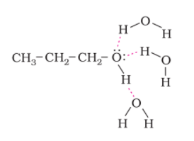
Preperation of Phenols
Phenol, also known as carbolic acid, was first isolated in the early nineteenth century from coal tar. Nowadays, phenol is commercially produced synthetically. In the laboratory, phenols are prepared from benzene derivatives by any of the following methods:
From haloarenes
Chlorobenzene is fused with NaOH at 623K and 320 atmospheric pressure. Phenol is obtained by acidification of sodium phenoxide so produced.
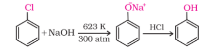
From benzenesulphonic acid
Benzene is sulphonated with oleum and benzene sulphonic acid so formed is converted to sodium phenoxide on heating with molten sodium hydroxide. Acidification of the sodium salt gives phenol.
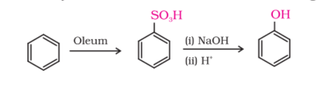
From diazonium salts
A diazonium salt is formed by treating an aromatic primary amine with nitrous acid (NaNO2 + HCl) at 273-278 K. Diazonium salts are hydrolysed to phenols by warming with water or by treating with dilute acids
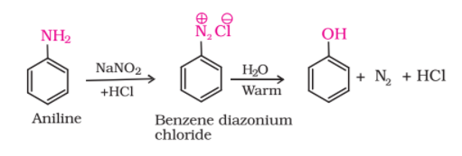
From cumene
Phenol is manufactured from the hydrocarbon, cumene. Cumene (isopropylbenzene) is oxidised in the presence of air to cumene hydroperoxide. It is converted to phenol and acetone by treating it with dilute acid. Acetone, a by-product of this reaction, is also obtained in large quantities by this method.
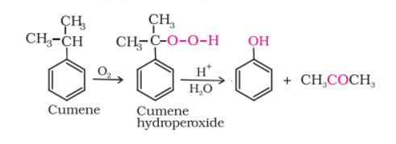
Reactions of phenols
Following reactions are shown by phenols only :1. Electrophilic aromatic substitution
In phenols, the reactions that take place on the aromatic ring are electrophilic substitution reactions.The –OH group attached to the benzene ring activates it towards electrophilic substitution. Also, it directs the incoming group to ortho and para positions in the ring as these positions become electron rich due to the resonance effect caused by –OH group. The resonance structures are shown under acidity of phenols.
Common electrophilic aromatic substitution reactions taking place in phenol are as follows:(i) Nitration:
With dilute nitric acid at low temperature (298 K), phenol yields a mixture of ortho and para nitrophenols.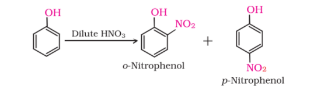
The ortho and para isomers can be separated by steam distillation. o-Nitrophenol is steam volatile due to intramolecular hydrogen bonding while p-nitrophenol is less volatile due to intermolecular hydrogen bonding which causes the association of molecules.
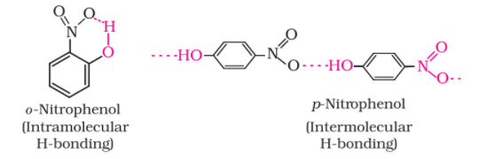
With concentrated nitric acid, phenol is converted to 2,4,6-trinitrophenol. The product is commonly known as picric acid. The yield of the reaction product is poor.
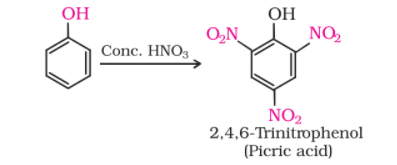
Nowadays picric acid is prepared by treating phenol first with concentrated sulphuric acid which converts it to phenol-2,4-disulphonic acid, and then with concentrated nitric acid to get 2,4,6-trinitrophenol.
(ii) Halogenation:
On treating phenol with bromine, different reaction products are formed under different experimental conditions.(a) When the reaction is carried out in solvents of low polarity such as CHCl3 or CS2 and at low temperature, monobromophenols are formed.
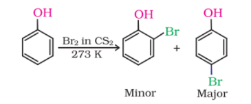
The usual halogenation of benzene takes place in the presence of a Lewis acid, such as FeBr3 (Unit 10, Class XII), which polarises the halogen molecule. In case of phenol, the polarisation of bromine molecule takes place even in the absence of Lewis acid. It is due to the highly activating effect of –OH group attached to the benzene ring.
(b) When phenol is treated with bromine water, 2,4,6-tribromophenol is formed as white precipitate.
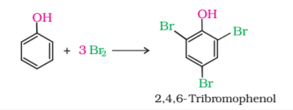
2. Kolbe’s reaction
Phenoxide ion generated by treating phenol with sodium hydroxide is even more reactive than phenol towards electrophilic aromatic substitution. Hence, it undergoes electrophilic substitution with carbon dioxide, a weak electrophile. Ortho hydroxybenzoic acid is formed as the main reaction product.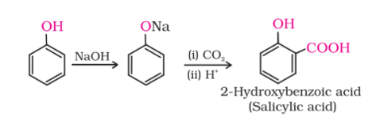
3. Reimer-Tiemann reaction
On treating phenol with chloroform in the presence of sodium hydroxide, a –CHO group is introduced at ortho position of benzene ring. This reaction is known as Reimer - Tiemann reaction. The intermediate substituted benzal chloride is hydrolysed in the presence of alkali to produce salicylaldehyde.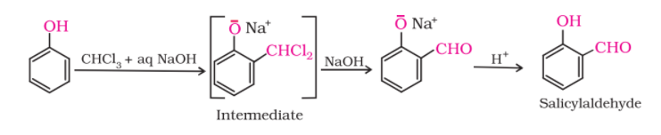
4. Reaction of phenol with zinc dust
Phenol is converted to benzene on heating with zinc dust.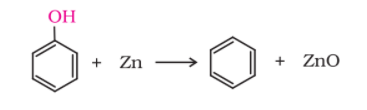
5. Oxidation
Oxidation of phenol with chromic acid produces a conjugated diketone known as benzoquinone. In the presence of air, phenols are slowly oxidised to dark coloured mixtures containing quinones.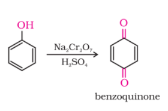